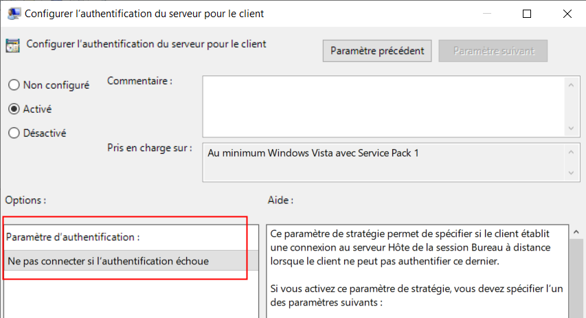
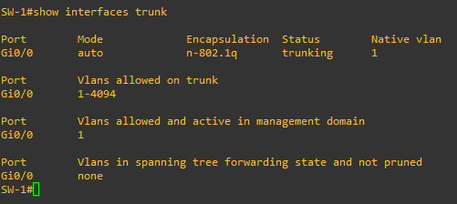

Renforcer le protocole RDP :
1 Pourquoi :
Il est trivial de mener des attaques MITM sur le protocole RDP. Voir l'outil SETH :
Pour renforcer le protocole RDP il est possible :
- De forcer lauthentification du serveur par Kerberos,
- Forcer l'utilisation du NLA,
Création de la GPO SECURE-RDP par défaut à la racine du domaine.
2 Forcer l'authentification Kerberos :
Voici le chemin du paramètre de sécurité : Configuration Ordinateur -> Stratégies -> Modèles d’administration -> Composants Windows -> Services Bureau à distance -> Client Connexion Bureau à distance
Modifier le paramètre : Configurer l'authentification du serveur pour le client.
Pour le définir sur la valeur : Ne pas connecter si l'authentification échoue.
Aperçu :

3 Forcer l'activation du NLA :
Le NLA est un mécanisme qui authentifie le cleint par le réseau. Sans lui l'initiation d'une connexion RDP consomme des ressources sur le serveur, ce qui peut mener à un DoS.
Voici le chemin des paramètres de sécurités : Configuration Ordinateur -> Stratégies -> Modèles d’administration -> Composants Windows -> Services Bureau à distance -> Hôte de la session Bureau à distance -> Sécurité
Modifier le paramètre : Requérir l'authentification utilisateur pour les connexions à distanceà l'aide de l'authetification au niveau du réseau.
Aperçu :
